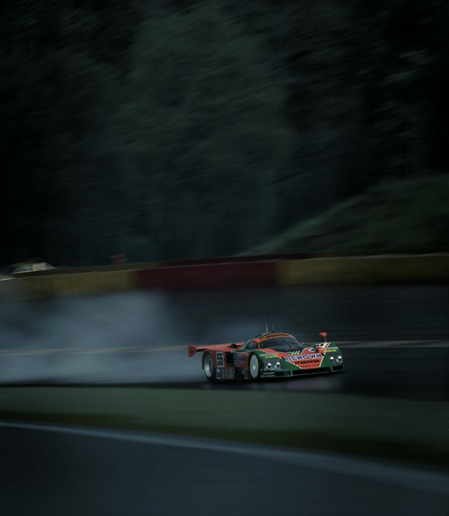

Você ja ouviu falar no carro que ganhou as 24h de Le Mans de 1991?

Resumo da história do Mazda 787B
Em junho de 1991, durante as 24 Horas de Le Mans, o 787B número 55 da equipe Mazdaspeed, pilotado por Johnny Herbert, Volker Weidler e Bertrand Gachot, fez história. Enquanto rivais como Jaguar e Mercedes enfrentaram problemas mecânicos, o Mazda manteve um ritmo constante e confiável, completando 362 voltas, o equivalente a quase 5.000 quilômetros. Foi a primeira vez que um carro japonês venceu Le Mans e, até então, a única vitória de um motor rotativo na prova. Herbert, exausto e desidratado, sequer conseguiu subir ao pódio após a corrida, mas o feito já estava eternizado. No entanto, essa vitória também marcou o fim da linha para o 787B. Pouco depois, a FIA decidiu banir motores rotativos das competições de endurance. A justificativa era padronizar a categoria e evitar tecnologias que fugissem ao conceito tradicional de motores a pistão, já que o Wankel oferecia vantagens de peso e potência que desequilibravam a competição. Assim, o Mazda 787B nunca mais pôde competir em Le Mans, tornando sua conquista ainda mais única e irrepetível. Hoje, o carro está preservado no Museu da Mazda em Hiroshima e ocasionalmente é exibido em eventos especiais, onde volta a encantar fãs com seu som característico. O 787B não é apenas um carro vencedor: é um símbolo da ousadia tecnológica da Mazda e da capacidade de desafiar convenções, deixando uma marca definitiva na história das corridas de longa duração.